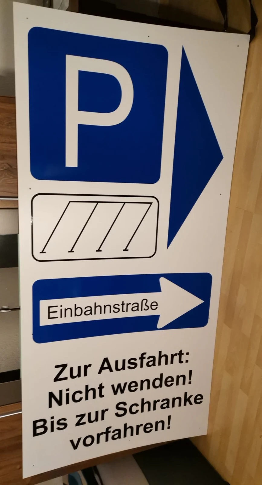
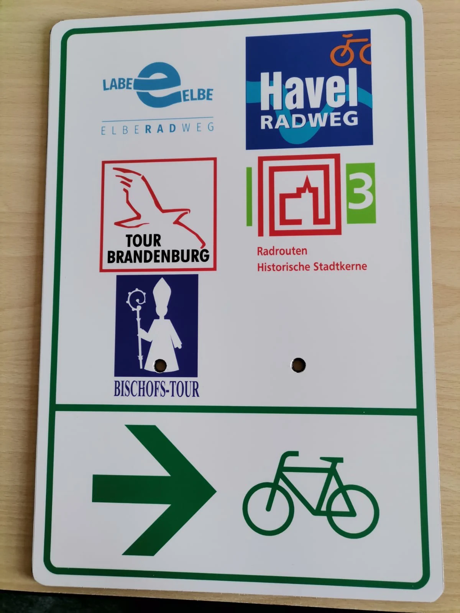
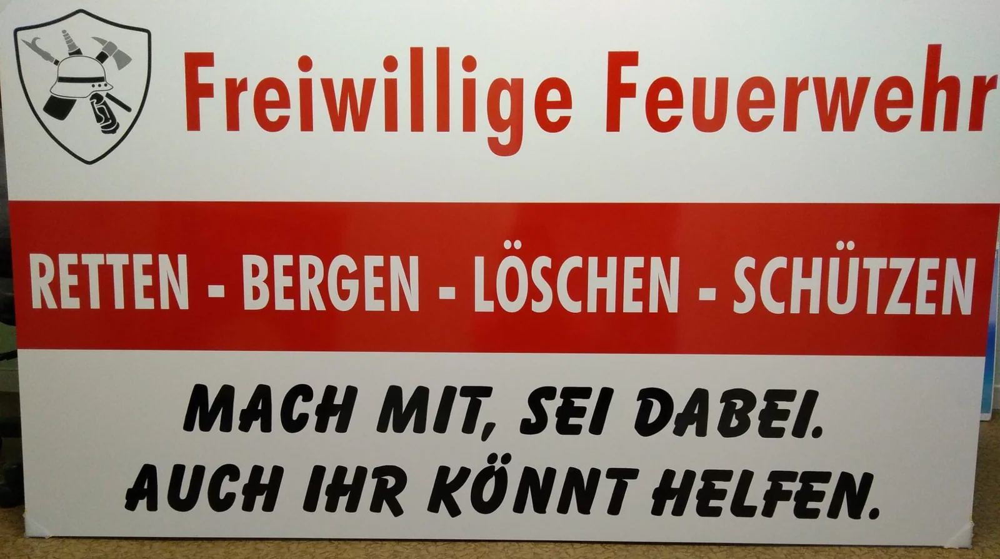

Schilder
Firmenschilder, Wegweiser und Bauschilder aus Aluverbund oder PVC – klar, professionell und exakt auf Ihren Unternehmensauftritt abgestimmt.
Unsere Leistungen
- Firmenschilder – repräsentativ und auf Ihr Corporate Design abgestimmt
- Wegweiser und Orientierungsschilder – klare Leitung für Besucher und Mitarbeiter
- Bauschilder – großformatige Informationstafeln für Baustellen und Projekte
- Türschilder – funktional und stilvoll für Innenräume
Ihre Vorteile
- Hochwertige Materialien für dauerhafte Nutzung
- Brillanter Digitaldruck oder präzise Folientechnik – Sie wählen das passende Verfahren
- Individuelle Größen, Formen und Designs
- Montage vor Ort auf Wunsch möglich
Klare und stilvolle Beschilderungen vermitteln Kompetenz und hinterlassen einen starken ersten Eindruck.
Referenzarbeiten







Sicherheits- und Pflichtkennzeichnung
Wer Beschäftigte oder Publikumsverkehr hat, braucht mehr als ein Firmenschild. Die Arbeitsstättenverordnung schreibt eine Kennzeichnung vor, und bei Umbau, Nutzungsänderung oder einer Begehung durch die Berufsgenossenschaft muss sie aktuell sein. Diese Kennzeichnung fertigen wir im selben Haus wie Ihre Werbeschilder – gestaltet, gedruckt und auf Wunsch montiert.
Flucht- und Rettungspläne nach ASR A2.3
Wir setzen Ihren Grundriss in einen Flucht- und Rettungsplan nach der Technischen Regel für Arbeitsstätten ASR A2.3 um. Eingezeichnet werden Flucht- und Rettungswege, der Standort „Sie befinden sich hier“, Sammelstellen, Feuerlöscher und Erste-Hilfe-Einrichtungen. Üblich ist das Format A3 auf 3 mm Alu-Dibond; ebenso möglich sind Digitaldruckaufkleber oder größere Formate für Hallen und Treppenhäuser.
Sicherheitszeichen nach DIN EN ISO 7010
- Rettungszeichen (E, grün) – Notausgang, Erste Hilfe, Sammelstelle, Notruftelefon
- Brandschutzzeichen (F, rot) – Feuerlöscher, Löschschlauch, Brandmelder
- Verbotszeichen (P) – Rauchen verboten, Zutritt für Unbefugte verboten
- Gebotszeichen (M) – Schutzbrille, Gehörschutz, Sicherheitsschuhe und weitere PSA
- Warnzeichen (W) – elektrische Spannung, Flurförderzeuge, Rutschgefahr
Kennzeichnung im laufenden Betrieb
- Boden- und Treppenmarkierungen, Stufenkanten und Verkehrswege
- Raum- und Türnummern, Ordnungs- und Regalkennzeichnung
- Betriebsanweisungen und Maschinenkennzeichnung nach Ihrer Vorgabe
- Sammelstellen- und Parkplatzbeschilderung im Außenbereich
Was wir nicht übernehmen: die brandschutzrechtliche Prüfung und Abnahme. Die Inhalte stimmen wir mit Ihren Unterlagen ab – mit dem Brandschutzkonzept, dem Grundrissplan oder Ihrer Fachkraft für Arbeitssicherheit. Gestaltung, Produktion und Montage kommen dann von uns.
Häufige Fragen zu Schildern und Kennzeichnung
Aus welchem Material fertigen Sie Schilder?
Am häufigsten aus Aluverbundplatte (Alu-Dibond) in 2, 3 und 4 mm Stärke – stabil, wetterfest und formstabil auch in großen Formaten. Für den Innenbereich und leichtere Anwendungen nutzen wir PVC-Hartschaum (Forex) in 3 mm. Beschriftet wird per Digitaldruck oder mit geplotteter Folie, je nach Motiv und Standzeit.
Erstellen Sie Flucht- und Rettungspläne?
Ja. Wir fertigen Flucht- und Rettungspläne nach ASR A2.3 auf Grundlage der Arbeitsstättenverordnung, üblicherweise im Format A3 auf 3 mm Alu-Dibond. Die Planinhalte stimmen wir mit Ihren Unterlagen ab; die brandschutzrechtliche Abnahme selbst gehört nicht zu unserem Leistungsumfang.
Nach welcher Norm fertigen Sie Sicherheitszeichen?
Nach DIN EN ISO 7010. Diese Norm legt die Piktogramme europaweit einheitlich fest – Rettungszeichen (E), Brandschutzzeichen (F), Verbotszeichen (P), Gebotszeichen (M) und Warnzeichen (W). Damit ist Ihre Kennzeichnung auch für auswärtige Besucher und Mitarbeitende ohne Erklärung verständlich.
Montieren Sie die Schilder auch vor Ort?
Ja, auf Wunsch übernehmen wir die Montage. Wir kommen aus Stendal in die gesamte Altmark und nach Magdeburg; bei Bedarf nehmen wir vorab vor Ort Maß. Alternativ liefern wir montagefertig oder Sie holen bei uns ab.
Kann ich eigene Druckdaten liefern?
Ja, am besten als PDF oder Vektordatei. Wenn nichts vorliegt, übernehmen wir die Gestaltung komplett – vom Entwurf über Ihre Freigabe bis zum fertigen Schild.
Sind die Schilder für den Außenbereich geeignet?
Ja. Wir arbeiten mit UV-beständigen Materialien und witterungsfesten Folien, damit Farben und Konturen über Jahre erhalten bleiben. Welcher Aufbau sinnvoll ist, hängt von Standort, Sonneneinstrahlung und gewünschter Standzeit ab – das klären wir vor dem Angebot.
Fertigen Sie auch Einzelstücke?
Ja, vom einzelnen Türschild bis zur kompletten Serie für mehrere Standorte. Gerade bei Pflichtkennzeichnung sind Einzelpläne und kleine Stückzahlen der Normalfall.
Wie schnell bekomme ich ein Angebot?
Auf Ihre Anfrage melden wir uns innerhalb eines Werktages. Das Angebot ist kostenlos und unverbindlich; den Fertigungstermin stimmen wir verbindlich mit Ihnen ab.
In Stendal und der gesamten Altmark für Sie da
Als Werbetechnik-Betrieb aus Stendal sind wir in der ganzen Region im Einsatz – in Tangermünde, Osterburg, Havelberg, Gardelegen, Salzwedel sowie in Magdeburg und Umgebung. Montage und Anbringung vor Ort übernehmen wir auf Wunsch direkt bei Ihnen. Jetzt unverbindlich anfragen →